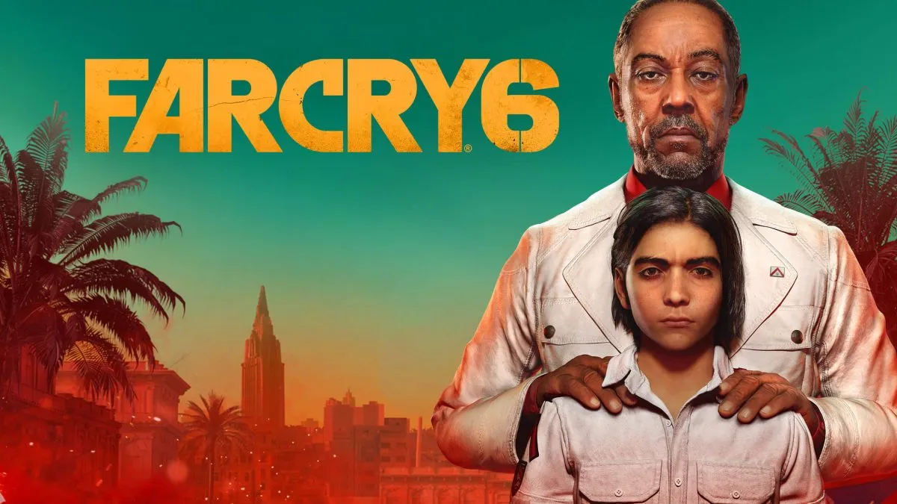

Project
Far Cry 6
Latest chapter of the anecdote factory set in Yara

Radio Libertad
Silver mission
Mission design document initially was more unique and feature rich, but due to the budget constrains we were limited to this pretty simple iteration where players need to visit four different locations to disable jammers.
I made first three beats with different flavors - small outpost with enemy presence, soviet block building with traversal section and a classic Far Cry tower segment with the eagle's nest on top of it. In the soviet block I repurposed the repair mechanic to have at least some sort of unique interaction additionaly to systemic lever.
By completing all three jammers players proceeded to the last location optionally using wingsuit. We were missing the crescendo moment there, so I had an idea to repurpose the lighting and have it striking the power station and frying all equipment around the station.
Lost and Found
Gold mission
This mission had several beats, but first and last were very challenging and interesting to work on.
First beat was located in the local airport. Due to many engine constrains we were quite limited in interior and enemy count. I wanted to have full 360 approach and enough options for players that wanted to have stealth and action. In result there was implemented spawn manager that controlled enemy population depending on the zone that players are in to make location populated enough.
In the last beat I had an exotic sequence where we wanted to have protagonist poisoned and driving the car while seeing hallucinations. Since FC6 had a first person camera it became pretty challenging. I decided to have hallucinations as a passengers and play with the weather, FOV and other special FX for that state. We also derived a car to have it specifically for this sequence. Whole segment was fully scripted and was my most challenging and rewarding experience on this project.